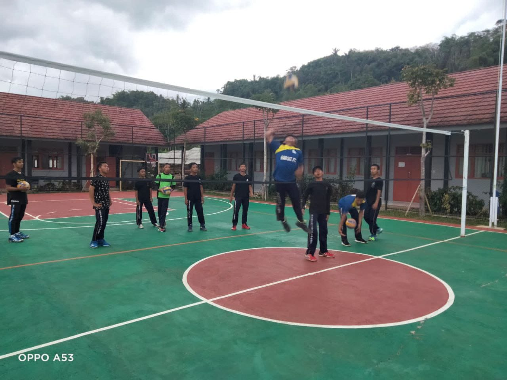
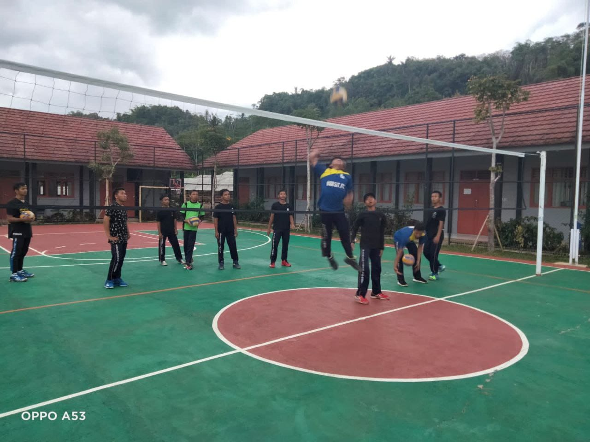

Ritme Kegiatan Harian
Kegiatan santri dirancang seimbang antara ibadah, belajar, dan pengembangan diri.
Ibadah & Tahfiz
Pembinaan ibadah, tahfiz, dan muraja'ah terjadwal setiap hari.
Kelas Akademik
Kurikulum nasional dengan pendalaman sains, bahasa, dan literasi.
Pembinaan Karakter
Mentoring, leadership, dan pembiasaan akhlak mulia.
Agenda Pekanan
Kegiatan rutin pekanan untuk mengasah minat dan bakat santri.
Ekstrakurikuler
Futsal, robotic, kaligrafi, jurnalistik, dan seni islami.
Kajian Tematik
Kajian akhlak, fiqh, serta motivasi belajar.
Kegiatan Sosial
Program bakti sosial dan pengabdian masyarakat.
Galeri Kegiatan
Momen kegiatan santri dalam pembelajaran dan pengembangan diri.
Akademik & Pembelajaran
Pembinaan & Karakter
Ibadah & Tahfiz
Ekstrakurikuler
Acara & Kunjungan


 
